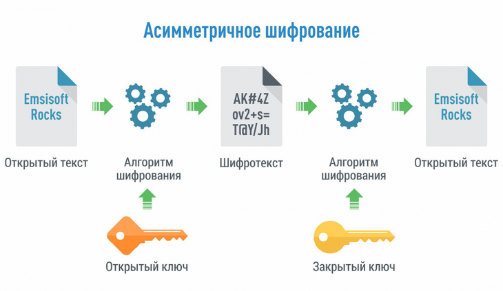

Ассимметричное шифрование
В системах с открытым ключом используются два ключа — открытый и закрытый, связанные определённым математическим образом друг с другом. Открытый ключ передаётся по открытому (то есть незащищённому, доступному для наблюдения) каналу и используется для шифрования сообщения и для проверки ЭЦП. Для расшифровки сообщения и для генерации ЭЦП используется секретный ключ.
Данная схема решает проблему симметричных схем, связанную с начальной передачей ключа другой стороне. Если в симметричных схемах злоумышленник перехватит ключ, то он сможет как «слушать», так и вносить правки в передаваемую информацию. В асимметричных системах другой стороне передается открытый ключ, который позволяет шифровать, но не расшифровывать информацию. Таким образом решается проблема симметричных систем, связанная с синхронизацией ключей.
Первыми исследователями, которые изобрели и раскрыли понятие шифрования с открытым кодом, были Уитфилд Диффи и Мартин Хеллман из Стэнфордского университета и Ральф Меркле из Калифорнийского университета в Беркли. В 1976 году их работа «Новые направления в современной криптографии» открыла новую область в криптографии, теперь известную как криптография с открытым ключом.

Объяснение на примере
Есть два собеседника — А и Б, А хочет передавать Б конфиденциальную информацию. Генерация ключевой пары. Б выбирает алгоритм (E,D) (E,D) и два ключа открытый и закрытый (e,d) и посылает открытый ключ e А по открытому каналу. Шифрование и передача сообщения. А шифрует информацию с использованием открытого ключа Б - e. E(m,e)=c И передает Б полученный шифротекст c. Расшифровывание сообщения. Б, с помощью закрытого ключа d, расшифровывает шифротекст c. D(c,d)=m Закрытый ключ каждой стороны не передается по незащищенному каналу, тем самым оставаясь в секретности.